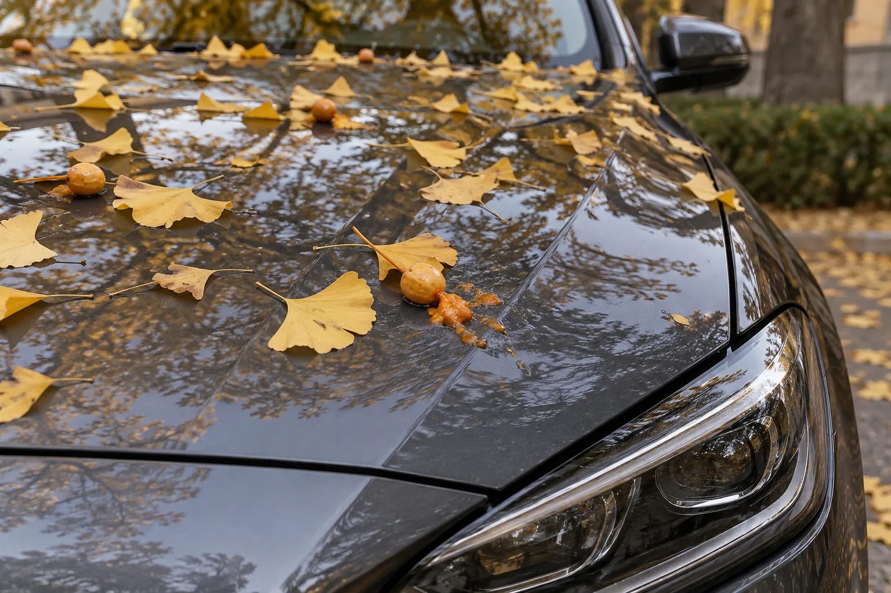
▲ 은행잎과 은행 열매가 떨어진 승용차 보닛. 터진 과육은 마르기 전에 불려서 들어내는 것이 순서다 이미지=AI 생성
은행잎이 노랗게 물드는 계절이면 가로수 아래 주차 자리가 반갑다가도, 다음 날 아침 보닛 위에 터진 은행 열매와 새똥을 보고 한숨이 나온다. 홍천 은행나무숲이나 아산 곡교천 은행나무길처럼 은행나무 명소로 드라이브를 다녀온 뒤에도 마찬가지다. 이런 오염물은 대개 지우는 방법이 잘못돼서 도장에 흠집을 남긴다. 휴지로 한 번 쓱 닦는 습관만 바꿔도 대부분 막을 수 있다. 세차 일반론은 기존 기사에 맡기고, 이번에는 오염물별로 무엇을, 어떤 순서로 해야 하는지만 정리했다.
1. 왜 도장이 상하나 — 오염물마다 이유가 다르다
자동차 도장의 맨 바깥층은 투명한 클리어코트다. 이번 글에 나오는 오염물은 대부분 이 층을 공격하거나, 이 층에 달라붙어 닦는 사람이 흠집을 내게 만든다. 오염물별로 확인된 근거는 다음과 같다.
- 새똥 — 산성만으로는 설명이 안 된다: 국내 제조사와 용품 업체는 새똥을 산성 또는 약산성 물질로 설명한다. 그런데 도막이 상하는 원리를 실험으로 따져 본 연구는 조금 다른 해석을 내놨다. 이란 아미르카비르 공과대학 연구진이 2011년 국제 학술지 JCTR(Journal of Coatings Technology and Research)에 발표한 연구로, 2021년 8월 도료 전문지 PCI Magazine에도 BASF 인도 법인 소속 필자 이름으로 거의 같은 내용이 실렸다. 연구진은 참새 새똥을 물에 풀어 아크릴 멜라민 클리어코트 위에 올리고, 60℃·자외선 조건의 촉진 내후성 시험기에서 300시간 노출했다. 측정한 새똥의 pH는 6.25로 중성에 가까워 산만으로 도막을 가수분해하기에는 부족하다고 봤고, 산과 금속 이온의 기여는 거의 없거나 약하다고 결론지었다. 대신 새똥 속 소화효소(아밀레이스·리페이스 같은 가수분해 효소)가 클리어코트의 결합을 끊는 것이 주된 메커니즘으로 판단된다고 적었다. 다만 한 종류의 클리어코트를 실험실 조건에서 시험했고, 효소 작용은 새똥 대신 소화효소 혼합물(판크레아틴)로 추적한 결과여서 모든 새똥과 도장에 그대로 들어맞는다고 단정하기는 어렵다. 연구진은 별도 실험에서 미리 노화시킨 도막은 24시간 노출만으로도 비슷한 에칭(부식 자국)이 생겼다고 밝혔다. 원인 해석과 별개로, 오래 둘수록 손해라는 결론은 같다.
- 나무 수액·송진 — 끈적이다 굳는다: 현대자동차그룹 저널은 수액과 송진이 도장면 코팅층에 침투해 손상을 줄 수 있고, 끈적일 때는 물로 비교적 쉽게 닦이지만 딱딱하게 굳으면 쉽게 지워지지 않는다고 설명한다. 굳은 수액을 억지로 떼어내다 긁히는 경우가 많다.
- 벌레 사체 — 굳으면 단백질 덩어리: 불스원은 벌레 사체에도 산성 성분이 있고, 방치하면 자국이 굳어 지우기 어려워진다고 안내한다. 현대자동차그룹도 벌레 사체를 새똥과 함께 도장 코팅층을 손상시킬 수 있는 오염물로 꼽는다.
- 은행 열매 — 냄새 성분과 끈적한 과육: 서울시는 은행 열매가 터지면 과육 속 빌로볼(bilobol)과 은행산(ginkgolic acid)이 나와 악취를 풍긴다고 설명한다. 열매는 암나무에만 열린다. 과육은 짓눌리면 도장면에 넓게 번지고, 마르면 달라붙는다. 다만 은행 과육이 도장을 얼마나 빨리 상하게 하는지에 대한 제조사·도료사의 공식 수치는 이번 취재에서 확인하지 못했다. 제조사 설명서가 말하는 유기 오염물과 같은 기준으로 빨리 지우는 게 안전하다.
- 꽃가루 — 비를 맞으면 달라붙는다: MBC 보도에 따르면 꽃가루는 비에 젖으면 표면에 달라붙어 잘 떨어지지 않고, 이 상태로 기계식 자동세차를 하면 이물질이 연마제처럼 작용해 도장면에 흠집을 남길 수 있다.
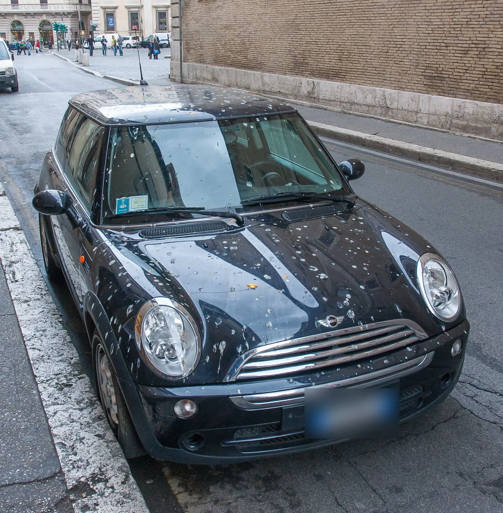
▲ 길가에 세워둔 차 보닛과 지붕에 새똥이 잔뜩 떨어진 모습(이탈리아 로마) ⓒ Sergey Ashmarin / Wikimedia Commons (CC BY-SA 3.0)
📍 몇 시간 안에 지워야 하나
제조사 취급설명서에는 시간 수치가 없다. 현대차·기아 설명서는 곤충·타르·수액·새의 오물을 '즉시' 제거하라고만 적고 있고, 도료 회사가 공개한 시간 기준도 이번 취재에서는 확인하지 못했다. 참고할 만한 수치는 독일 자동차 클럽 ADAC의 안내다. ADAC는 새똥이 무더위에는 10~20분 만에도 클리어코트 맨 위층을 공격할 수 있고, 그러면 지운 뒤에도 흰 테두리가 남기 쉽다고 설명한다. 앞서 소개한 연구에서도 효소 혼합물을 3시간 올려둔 시험에서 60℃까지는 온도가 높을수록 손상이 커졌다. 정리하면 한여름 뙤약볕 아래 차는 발견 즉시, 그 밖에도 늦어도 그날 안에 지우는 것이 안전하다.
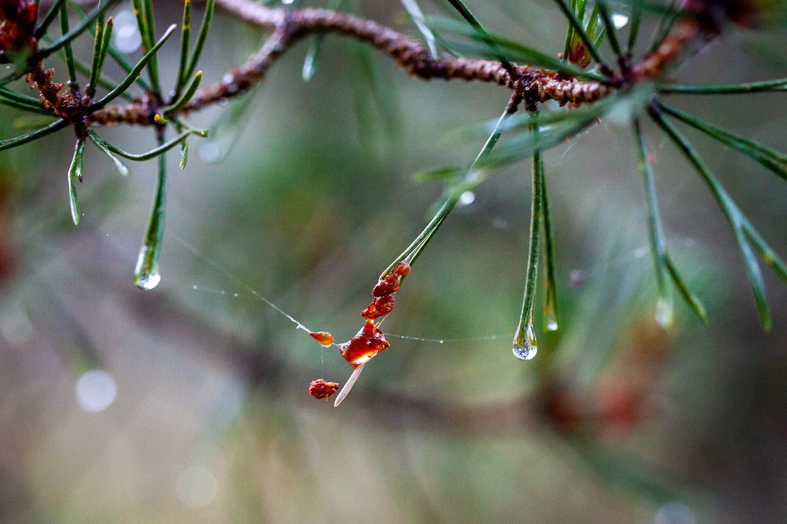
▲ 소나무 가지에 맺힌 송진 방울. 차 위에 떨어진 송진도 처음엔 끈적이다가 시간이 지나면 이렇게 단단하게 굳는다 ⓒ Stijndg / Wikimedia Commons (CC BY-SA 4.0)
2. 오염물별 제거법 한눈에 보기
아래 표는 제조사 취급설명서와 용품 업체 공식 안내를 기준으로 정리했다. 특정 제품을 고를 필요는 없다. 표에 적은 '제품 종류'에 해당하는 것이면 된다. 어떤 제품이든 쓰기 전에 라벨의 사용 가능 소재와 주의 사항을 먼저 읽자.
| 오염물 | 당장 할 일 | 쓰는 도구·제품 종류 | 하면 안 되는 것 |
|---|---|---|---|
| 은행 열매 | 장갑 끼고 열매부터 집어 들어낸다. 남은 과육은 물을 뿌리거나 젖은 수건을 올려 불린다 | 일회용 장갑, 분무기·물, 극세사 수건, 카샴푸(중성 세제) | 맨손으로 만지기, 터진 과육을 수건으로 넓게 문질러 펴기 |
| 새똥 | 물을 흠뻑 먹인 극세사 수건을 몇 분간 올려 불린다. 그다음 한 방향으로 들어내듯 닦는다 | 극세사 수건, 물, 새똥 제거 표기가 있는 퀵디테일러·버그 클리너 | 마른 휴지·물티슈로 바로 문지르기, 뙤약볕에 며칠 방치 |
| 나무 수액·송진 | 아직 끈적이면 물로 씻어낸다. 굳었으면 제거제로 녹인다 | 수액(레진) 제거제, 타르 제거제, 타르 제거 기능 버그 클리너, 부드러운 천 | 손톱·칼·스크래퍼로 긁기, 휘발유·아세톤, 뜨거운 차체에 제거제 사용 |
| 벌레 사체 | 막 붙었다면 셀프세차장 고압수로 헹군다. 말라붙었으면 버그 클리너를 뿌려 둔다 | 단백질 분해 효소가 든 버그 클리너, 고압수(적정 거리 유지) | 수세미·솔로 박박 문지르기, 고압 노즐을 도장에 바짝 대기 |
| 꽃가루 | 물로 먼저 충분히 헹군다. 젖기 전이라면 먼지털이로 가볍게 털어낸다 | 고압수·물, 카샴푸, 극세사 수건 | 마른 걸레로 닦기, 헹구지 않은 채 브러시 자동세차 |
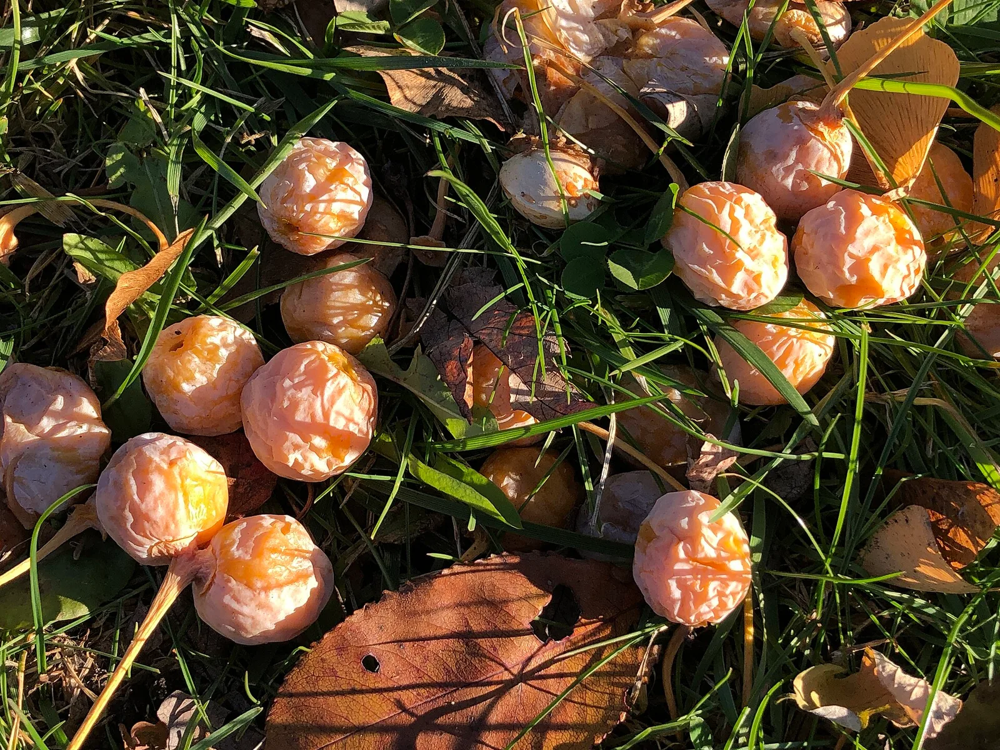
▲ 은행나무 암나무 아래 떨어진 은행 열매. 겉의 말랑한 과육이 터지면 특유의 냄새와 끈적한 즙이 나온다 ⓒ Famartin / Wikimedia Commons (CC BY-SA 4.0)
📍 은행 열매는 맨손으로 만지지 말자
은행 열매를 껍질째 맨손으로 만지면 악취가 배는 것은 물론 두드러기, 가려움, 발적 같은 접촉성 피부염이 생길 수 있다(하이닥). 보닛이나 와이퍼 주변에 떨어진 열매를 치울 때는 일회용 장갑을 끼고, 작업 뒤에는 손을 씻기 전까지 눈과 얼굴을 만지지 말자. 타이어로 밟은 과육이 휠하우스나 신발 바닥에 묻어 실내로 냄새가 번지기도 하니, 은행나무 가로수 아래에 세웠다면 차에 타기 전 발밑도 한 번 확인하는 게 좋다.
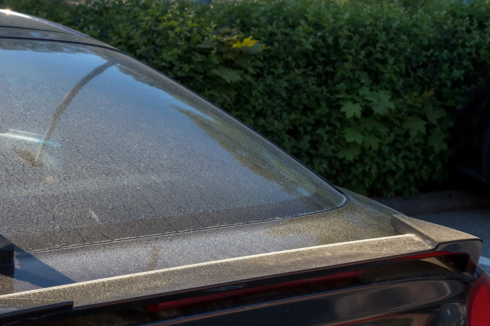
▲ 뒷유리와 트렁크에 소나무 꽃가루가 뿌옇게 내려앉은 차(스웨덴). 닦기 전에 물로 먼저 충분히 헹궈내는 것이 순서다ⓒ W.carter / Wikimedia Commons (CC BY-SA 4.0)
3. 단계별로 따라 하기 — 불리고, 들어내고, 씻고, 녹이고, 보호
오염물 종류가 달라도 순서는 거의 같다. 핵심은 오염물을 도장 위에서 끌고 다니지 않는 것이다. 새똥이나 굳은 과육 속에는 모래알 같은 딱딱한 입자가 섞여 있을 수 있어, 마른 채로 밀면 그 입자가 사포처럼 도장을 긁는다.
- 그늘로 옮기고 차체를 식힌다. 현대차·기아 설명서는 왁스를 차체가 뜨겁지 않을 때 그늘에서 칠하라고 안내하고, 수액 제거제 제조사인 소낙스도 수액 제거제를 뜨거운 표면에 쓰지 말라고 안내한다. 한낮 주차장이라면 해가 기울 때까지 기다리는 편이 낫다.
- 불린다. 분무기로 물을 충분히 뿌리거나, 물을 흠뻑 먹인 극세사 수건을 오염물 위에 접어 몇 분간 올려둔다. ADAC는 젖은 종이를 얹어 두면 5~10분이면 대개 새똥이 풀린다고 안내하고, 케미컬가이즈 역시 굳은 새똥은 물로 먼저 불려 몇 분 두라고 권한다. 중성 카샴푸를 푼 물을 쓰면 더 잘 풀린다.
- 들어낸다. 불린 덩어리를 수건으로 감싸 쥐듯 들어 올리거나, 한 방향으로 한 번만 쓸어낸다. 같은 면으로 왔다 갔다 문지르지 말고, 한 번 닦을 때마다 수건 면을 바꾼다.
- 씻어낸다. 남은 자국은 물이나 카샴푸로 헹군다. 현대차 설명서는 부드러운 세제로 이물질을 제거하고 미지근한 물이나 찬물로 충분히 헹구라고 안내한다.
- 그래도 남으면 전용 제거제. 굳은 수액·송진·벌레 자국은 수액 제거제나 타르 제거제, 버그 클리너를 쓴다. 현대자동차그룹은 타르 제거제나 타르 제거 기능을 겸한 버그 클리너를 뿌려 불린 뒤 고압수로 씻어내라고 설명한다. 소낙스는 제거제를 부드러운 천에 뿌려 닦아내고, 쓰기 전 눈에 띄지 않는 곳에서 먼저 시험하라고 적고 있다.
- 보호한다. 제거제가 기존 왁스층까지 벗겨낼 수 있으므로, 닦아낸 자리에는 퀵디테일러나 물왁스로 가볍게 보호막을 다시 입힌다. 소낙스도 제거 작업 뒤 왁스로 표면을 보호하라고 안내한다.
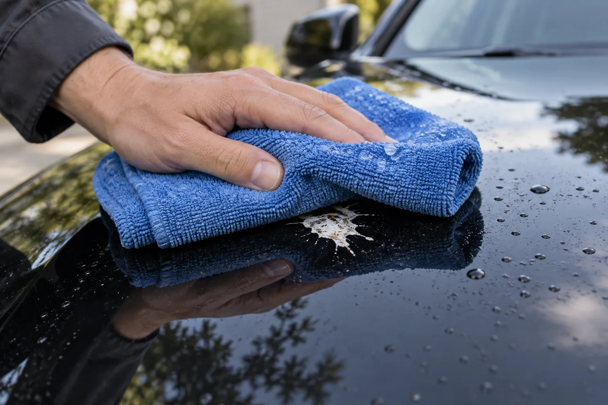
▲ 새똥 위에 물을 먹인 극세사 수건을 덮어 불리는 모습. 몇 분 두었다가 들어내듯 닦는다 이미지=AI 생성
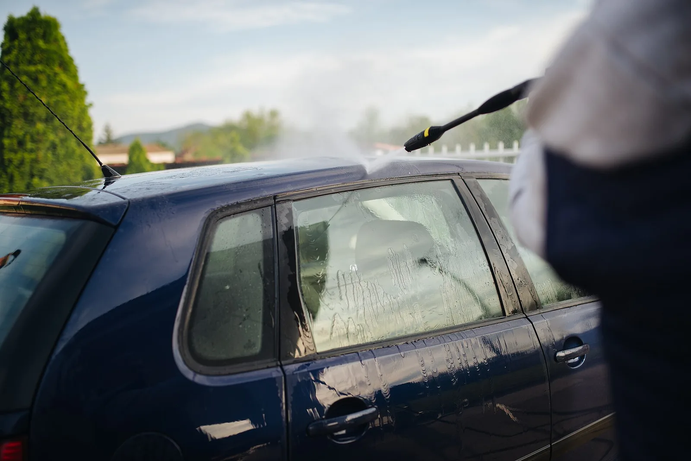
▲ 고압 세척기로 차 지붕과 옆면을 헹구는 모습. 제거제로 불린 오염물은 노즐을 도장에서 충분히 떨어뜨린 채 씻어낸다 ⓒ Shixart1985 / Wikimedia Commons (CC BY 2.0)
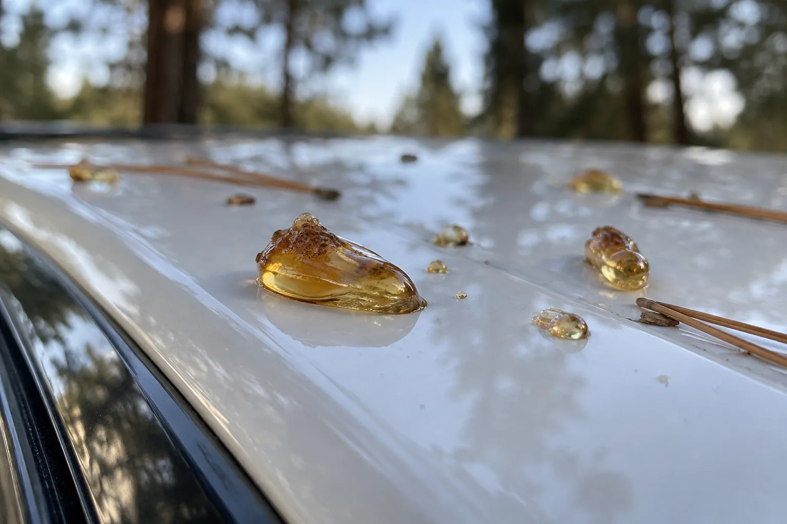
▲ 차 지붕에 떨어져 굳은 수액 방울. 이 상태가 되면 물로는 잘 지워지지 않아 수액 제거제로 녹여야 한다 이미지=AI 생성
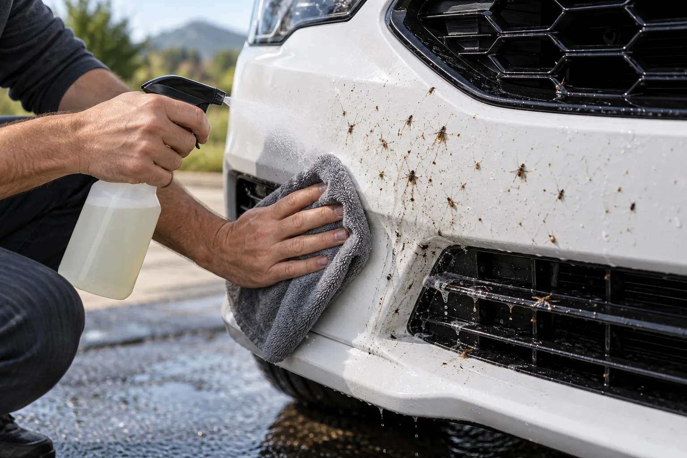
▲ 앞범퍼에 말라붙은 벌레 자국을 버그 클리너로 불려 닦는 모습 이미지=AI 생성
📍 제거제는 '어디에 쓰면 안 되는지'부터 확인
수액·타르 제거제는 제품마다 사용 가능한 소재가 다르다. 예를 들어 소낙스는 자사 수액 제거제 안내에서 도장·유리·크롬·플라스틱에는 쓸 수 있지만 아크릴과 플렉시글라스(캠핑카 창 등)에는 쓰지 말라고 안내한다. 현대차·기아 설명서는 휘발유, 아세톤, 휘발성 유기용제(초강력 세정제)가 램프와 카메라 렌즈를 훼손할 수 있다며 사용하지 말라고 적고 있다. 헤드램프, 후방카메라, 센서 주변은 특히 조심하자.
4. 이미 자국이 남았다면 — 에칭, 광택, 그리고 샵에 맡길 기준
오염물을 다 지웠는데도 그 자리에 윤곽이 남아 있다면 에칭일 가능성이 크다. 오염물이 클리어코트 표면을 파고들어 생긴 얕은 함몰이나 변색 자국이다. 물을 뿌리면 잠깐 안 보이다가 마르면 다시 보이고, 빛에 비춰 보면 표면이 오목하게 꺼져 보이는 식이다. 세제로는 없어지지 않는다.
- 가벼운 자국: 연마 성분이 약한 광택제(폴리시)로 표면을 아주 얇게 다듬어 없애는 방식이 일반적이다. 에칭의 원리와 워터스팟 제거법은 「세차하고 돌아섰더니 생긴 하얀 얼룩」에, 폴리싱 입문 단계는 「셀프 디테일링 시작하는 법」에 정리해 두었다.
- 컴파운드는 신중하게: 컴파운드는 클리어코트를 깎아내는 연마제다. 기아 설명서도 연마제가 섞인 왁스나 헝겊은 광택을 떨어뜨리고 도장면을 손상시킬 수 있다고 경고한다. 클리어코트는 한 번 깎이면 다시 채워지지 않으므로, 좁은 부위를 손으로 가볍게 해 보고 안 되면 멈추는 게 원칙이다.
- 샵에 맡길 기준: ① 광택제로 두세 번 시도해도 윤곽이 그대로다 ② 자국이 넓거나 여러 군데다 ③ 무광(매트) 도장, PPF(보호 필름), 랩핑 차량이다(현대차 설명서는 무광 도장에 왁스·연마제·광택제를 쓰지 말라고 적고 있다) ④ 자국 가운데 도막이 갈라지거나 들뜬 부분이 보인다. 이런 경우는 디테일링 샵이나 정비소의 판금·도장 부서에서 도막 두께를 확인한 뒤 연마할지, 부분 도장할지 판단받는 편이 안전하다.
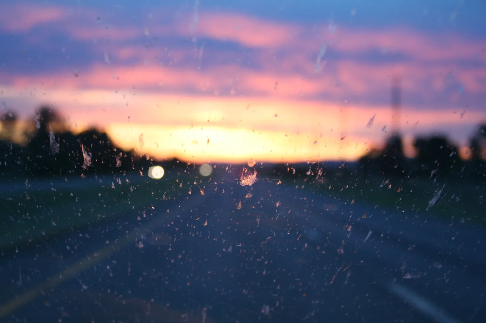
▲ 교외 도로를 달린 뒤 앞유리에 붙은 벌레 자국. 유리도 말라붙기 전에 불려 닦는 편이 수월하다 ⓒ H Dragon / Wikimedia Commons (CC BY 2.0)
5. 이것만은 하지 말자
⚠️ 하면 안 되는 것
· 마른 휴지·물티슈로 바로 문지르기 — 불리지 않은 오염물 속 딱딱한 입자가 도장을 긁는다. 케미컬가이즈도 문질러 닦고 싶은 충동을 참으라고 강조한다
· 손톱, 칼, 동전, 스크래퍼로 긁어내기 — 현대차 설명서는 타르를 지울 때 뾰족한 물건을 쓰지 말고 타르 제거제를 쓰라고 안내한다
· 휘발유, 아세톤, 신너 같은 강한 용제 — 램프·카메라 렌즈를 훼손할 수 있고 도장에도 안전하다는 보장이 없다
· 뙤약볕에 달궈진 차체에서 작업하기 — 제거제와 세제가 금방 말라 얼룩이 남는다. 소낙스는 뜨거운 표면 사용을 금한다
· 수세미·거친 솔·연마제 섞인 천 — 오염물보다 흠집이 더 큰 문제가 된다
· 고압수 노즐을 도장에 바짝 대기 — 기아 설명서는 노즐을 가까이 대거나 한곳에 집중해 분사하면 차량 표면이 손상될 수 있다고 경고한다
· "다음 세차 때 한꺼번에" 미루기 — 한 실험에서는 미리 노화시킨 도막에 새똥을 24시간만 올려둬도 에칭이 생겼고, ADAC는 무더위엔 10~20분 만에도 손상이 시작될 수 있다고 본다
6. 예방 — 주차 자리, 보호막, 그리고 커버
- 주차 자리부터: 케미컬가이즈는 새똥 예방법으로 나무와 전선 아래를 피하고 지붕 있는 곳에 세우라고 권한다. 가을엔 특히 열매가 떨어지는 은행나무 암나무 가로수 바로 아래를 피하는 것만으로도 은행 과육과 새똥을 함께 줄일 수 있다. 서울시 등 지자체가 가을마다 은행 열매 채취에 나서지만 모든 가로수를 다 털지는 못한다.
- 왁스·코팅으로 시간을 번다: 왁스나 코팅층은 오염물이 도장에 직접 닿는 것을 늦추고, 표면이 매끄러워 오염물이 쉽게 떨어지게 한다. 다만 오염물을 영원히 막아주는 것은 아니다. ADAC는 왁스나 세라믹 코팅도 새똥에 오래 노출되면 짧은 시간 안에 공격받아 결국 녹아내린다며 영구적인 보호막이 아니라고 설명한다. 코팅한 차도 발견 즉시 지우는 원칙은 같고, 강한 용제나 연마제가 코팅층까지 벗겨낼 수 있으니 시공점의 관리 안내가 있다면 그것부터 따르자. 왁스·유리막·세라믹 코팅의 차이는 「왁스·유리막·세라믹코팅 진짜 차이」를 참고하자.
- 커버: MBC 보도는 꽃가루 철 야외 주차 차량에 차량용 커버를 권했다. 은행나무 아래나 나무가 많은 야외에 오래 세워둘 때도 같은 원리로 도움이 된다. 커버를 씌우기 전에는 차체 먼지를 먼저 털어내야 커버와 도장 사이에서 먼지가 쓸리지 않는다.
- 차에 '응급 키트'를 두자: 극세사 수건 두세 장, 물을 담은 작은 분무기, 퀵디테일러 한 병, 일회용 장갑이면 충분하다. 발견 즉시 불려서 들어내는 것이 어떤 제거제보다 효과적이다.
- 세차 방식도 신경 쓰자: 오염물이 붙은 채로 브러시 자동세차에 들어가면 솔이 오염물을 끌고 다닌다. 세차 방식별 흠집 위험은 「브러시 세차기, 다른 차 때 묻은 솔로 내 차를 닦는 겁니다」에서 비교했다.
▲ 은행나무 아래 주차한 SUV. 보기엔 좋지만 열매가 떨어지는 암나무 바로 아래는 피하는 게 좋다 이미지=AI 생성
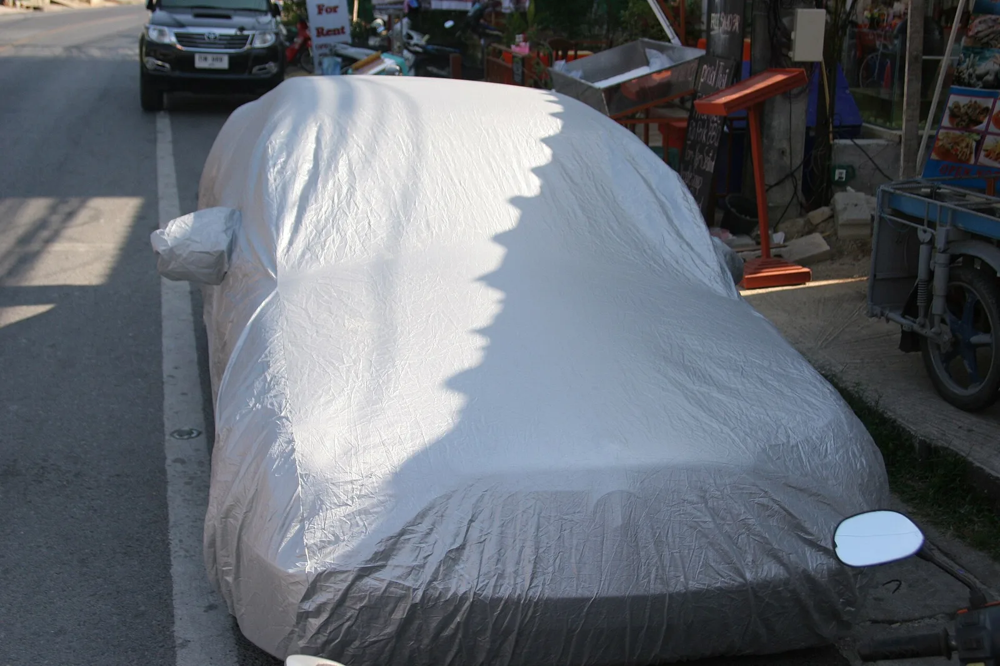
▲ 은색 차량용 커버를 씌워 길가에 세워둔 차(태국 푸껫). 커버를 씌우면 새똥·수액·꽃가루가 도장에 직접 떨어지지 않는다ⓒ Alexander Baranov / Wikimedia Commons (CC BY 2.0)
7. 정리 — 빨리, 젖은 채로, 문지르지 말고
첫째, 발견하면 그날 지운다. 제조사 설명서는 곤충·수액·새의 오물을 즉시 제거하지 않으면 표면이 손상될 수 있다고 경고하고, 새똥은 무더위에 10~20분 만에도 클리어코트를 공격할 수 있다(ADAC). 뙤약볕 아래라면 발견 즉시, 아니어도 그날 안에 지운다.
둘째, 불리고 들어낸다. 물을 먹인 극세사 수건을 몇 분 올려두고, 한 방향으로 들어내듯 닦는다. 은행 열매는 장갑을 끼고 치우고, 굳은 수액은 수액·타르 제거제, 벌레는 버그 클리너, 꽃가루는 물로 먼저 헹군다.
셋째, 자국이 남았다면 약한 광택제부터, 안 되면 샵으로. 휴지, 손톱, 아세톤, 컴파운드 남용은 오염물보다 더 큰 손상을 남긴다. 평소엔 나무 바로 아래 주차를 피하고, 왁스나 코팅으로 시간을 벌어 두자.